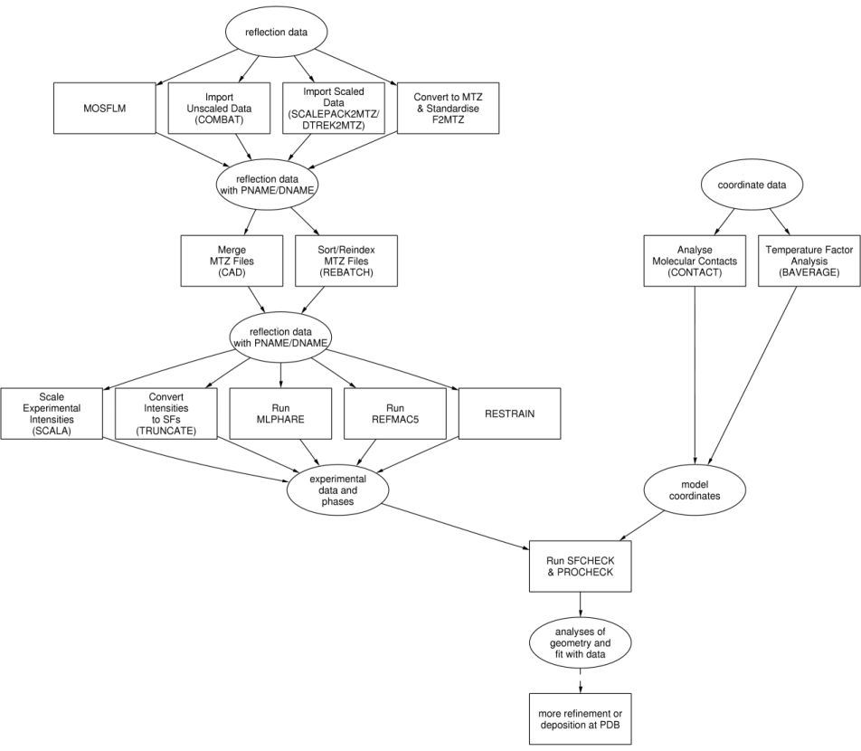

|
CCP4 Roadmaps |
| STRUCTURE ANALYSIS |
STRUCTURE ANALYSIS AND DATA HARVESTING

The plain rectangular boxes represent
tasks as in the
CCP4 Graphical User Interface, the steps to take for structure analysis and data harvesting.
Most (or all) of the tasks representing data harvesting can be found in different modules
of CCP4i:
The ellipsoids represent the input and output to and from the various tasks.
Auxiliary CCP4 programs used in these tasks
- ACT
- Analyse coordinates
- ANISOANL
- Analyse anisotropic displacement parameters
- AREAIMOL
- Analyse solvent accessible areas
- BAVERAGE
- Averages temperature factor over main- and side-chain atoms
- CAVENV
- Calculate cavities in macromolecular structures
- CONTACT
- Computes various types of contacts in protein structure
- DISTANG
- Analyse distances and angles
- DYNDOM
- Determine dynamic domains when two conformations are available
- FREERFLAG
- Tag each reflection in an MTZ file with a flag for cross-validation
- GEOMCALC
- Molecular geometry calculations
- PHISTATS
- Analysis of agreement between phase sets, and checking it against weighting factors
- POLYPOSE
- Superimpose many multi-domain structures
- SC
- Analyse shape complementarity
- SURFACE
- Surface accessibility; also for preparing input for VOLUME
- TOPP
- Topological comparison
- VOLUME
- Polyhedral volume around selected atoms
- WATERTIDY
- Rationalise waters at the end of refinement
Other non-CCP4 programs
- WHAT IF
- Protein structure analysis
- Uppsala Structural Biology Labs
- Servers and services for structure analysis
Further reading
Data Harvesting

EBI-MSD Project - Data Harvesting Concept
PROCHECK@UCL
SFCHECK@YSBL
CCP4 Program Documentation